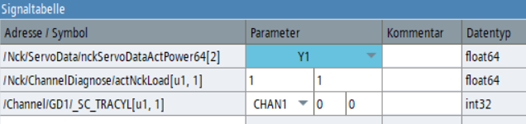

In einer änderbaren NC/PLC-Trace-Konfiguration können Variablen entweder durch Auswahl aus der Variablenliste oder durch Eingabe in das Adressfeld der Signaltabelle mit Hilfe einer Auto-Vervollständigungsliste zur Konfiguration hinzugefügt werden.
Im Adressfeld der Signaltabelle werden PLC-Variablen mit ihren symbolischen Namen angezeigt. Die Speicheradresse wird nur angezeigt, wenn für diese Adresse kein Symbol vorhanden ist. (Als Tool-Tipp für das Feld "Adresse / Symbol" wird sowohl das Symbol als auch die Adresse angezeigt, wenn beide vorhanden sind.)
Die Adresse der PLC-Variablen kann bearbeitet werden, wodurch die Adresse durch eine andere PLC-Adresse ersetzt wird. Andere Variablenadressen sind nicht bearbeitbar.
Wenn für eine Variable Parameter vorliegen, werden diese in der Spalte "Parameter" der Signaltabelle angezeigt.
Maschinenachsen, Geometrieachsen und Kanalparameter können aus Dropdown-Listen ausgewählt werden, die mit den Bezeichnern der auf der Maschine vorhandenen Achsen/Kanäle gefüllt werden. (Kanalachsparameter werden in Maschinenachsbezeichner umgewandelt.)
| Hinweis |
|
Für Geometrieachsen wird der Bezeichner in der Applikation nicht automatisch umgewandelt. Wenn Sie die Kanal- oder Achskonfigurationen geändert haben, starten Sie die Applikation neu, um die Bezeichner zu aktualisieren. |
Numerische Indizes werden in Bearbeitungsfeldern angezeigt. Die Anzahl der Bearbeitungsfelder kann variieren, je nachdem, wie viele Indizes vorhanden sind oder welche Indizes für die betreffende Variable änderbar sind.
Wenn der Konfiguration eine Variablenadresse hinzugefügt wird und die Adresse die Indizes nicht enthält, gelten folgende Standardwerte:
Achs- und Kanalbezeichner: Ungültige Auswahl (leeres Kombinationsfeld).
BTSS-Einheiten-, Spalten- und Zeilenindizes: Wert 1
Die Anwendung prüft weder die Unter- noch die Obergrenze der BTSS-Indizes. Die Online-Hilfe in der Variablenauswahlliste beschreibt die korrekte Indexverwendung für eine bestimmte Variable.
Array-Indizes: Der Standardwert ist die untere Grenze des Array-Indexbereichs.
Beim Fahren mit dem Mauszeiger über das Bearbeitungsfeld zeigt ein Tool-Tipp die untere und obere Grenze des Indexbereichs an. Die Array-Grenzwerte werden auch in der Variablenauswahlliste angezeigt.
Wenn ein Parameter in einem Kombinationsfeld oder Bearbeitungsfeld geändert wird, werden die Indizes im Adressfeld der Variablen entsprechend aktualisiert.
Beim Hinzufügen einer Variablen kann eine Adresse zusammen mit dem Indexteil in die Signaltabelle eingegeben werden. Die eingegebenen Indizes werden dann zum Füllen der Spalte "Parameter" verwendet.
Nach dem Hinzufügen oder Bearbeiten einer Variablen werden ungültige Parameterwerte mit roter Hintergrundfarbe angezeigt, und solche Fehler verhindern den Start einer Trace-Aufzeichnung. (Die meisten Parameterfehler werden jedoch nicht direkt nach dem Laden einer Sitzungsdatei angezeigt, solange die Konfiguration nicht geändert wird.)
Wenn ein Parameter für ein bereits aufgezeichnetes Signal geändert wird, werden die aufgezeichneten Daten aus dem Trace-Diagramm gelöscht.
Eine PLC1500-Variable kann als geschachtelte Array-Struktur mit mehr als einem Indexteil in der Adresse definiert werden.
Beispiel: LBP_AlarmMessages.Channel[1..10].FdStop_1[0..15]
Für eine solche Variable wird in der Spalte "Parameter" kein Bearbeitungsfeld erstellt. Stattdessen wird im Feld "Adresse" die komplette Adresse angezeigt, und die Indizes müssen dort bearbeitet werden.
Nach dem Hinzufügen der Variablen zeigt die Adresse die Indexbereiche an, z. B. [1..10]. Das Adressfeld hat eine rote Hintergrundfarbe, da es noch nicht gültig ist. Doppelklicken Sie auf das Adressfeld oder drücken Sie die Einfg-Taste, um das Feld in den Bearbeitungsmodus zu versetzen. Geben Sie die erforderlichen Indizes in die Adresse ein und drücken Sie die Eingabetaste, um sie erneut zu bestätigen.
Solange noch Indexfehler in der Adresse vorhanden sind, informiert Sie ein Tool-Tipp genau über die Art des Fehlers.
Der Indexbereiche der Variablen wurde noch nicht durch einen gültigen Index ersetzt. Und der andere Index liegt außerhalb des gültigen Bereichs.